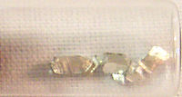

Numero atomico: 50
Massa atomica: 118,7
Temperatura di fusione (°C): 232
Temperatura di ebollizione (°C): 2602
Energia di prima ionizzazione (kj/mol): 709
Elettronegatività (secondo Pauling): 1,96
Densità: 7,29
Numeri di ossidazione: +2+4
Configurazione elettronica: 1s2, 2s2, 2p6, 3s2, 3p6, 3d10, 4s2, 4p6, 4d10, 5s2 5p2
Maggiori Informazioni